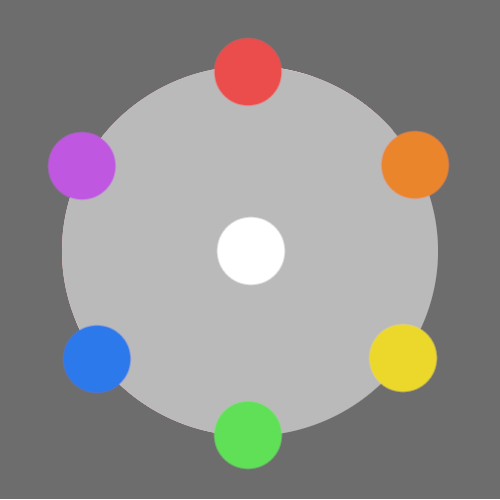

Radiant Types
Each person from The Haevan has a particular skillset in combat determined by their radiant, which is represented as a color on a basic color wheel. Their radiant determines their greatest strengths in combat, and everyday life. Similarly to how colors operate, the primary colors (red, blue, and yellow)have unique traits, while secondary colors exhibit a bit of both the components that make it up. On a basic level, the different radiant types are as follows:
-

- Red:Referred to as the "Links," these people are known for their superhuman speed. In combat, they are often capable of striking first, and can easily escape fights with those much stronger than them. Their speed makes them excel at long distance travel and establishes them as a major method of communication across the planet.
- Orange:Referred to as "The Legion," these people exhibit both speed and strength. Due to this, they are viewed as the most capable people in battle and are often recruited to military or law enforcement positions in society. They have deep connections with one another in combat, increasing each other's power for every fellow Legion member on their side.
- Yellow:Referred to as the "Sparks," this radiant gifts a person with superhuman strength. In combat, they deal major damage at the cost of typically being slower and more vulnerable than their adversaries. Their brute strength makes them valuable members to society as builders or body guards.
- Green:Referred to as "Nurturers," the mix between yellow and blue types gives these people a knack for physical strength and personal defense. Unique to this type, however, nurturers also exhibit very research-oriented and work to develop spells and potions to heal their allies or damage their enemies. In combat, nurturers enhance their allies' biggest strength.
- Blue:Referred to as "Rocks," these people are known for their resilience and strong defense. In combat, they will have an increased defense compared to their opponents, allowing them to withstand harder hits. Rocks are protectors by nature, making them very useful assets in team combat scenarios.
- Purple:Referred to as "Deceivers," these people are gifted with a mixture of speed and defense, leading to a typically sly and sneaky nature in combat. Deceivers are shifty and agile, allowing them to get the better of their stronger opponents, while also being tough and defensive enough to prioritize their own safety through the use of stealth and surpirse attacks. In combat, deceivers can strike with an extremely effective attack on their first turn, simulating the element of surprise that they are known for.
Strengths and Weaknesses
Using the color wheel as a reference, a radiant is weak to the two radiants counterclockwise from it and strong against the two radiants clockwise from it. It is neutral to the radiant directly across from it. For example, a Link (red) would be strong against the Legion (orange) and the Sparks (yellow). However, they would be weak against Deceivers (purple) and Rocks (blue). They would be neutral to Nurturers (green).
An attack against a radiant you are strong against is more effective, doing bonus damage. However, an attack against someone you are weak against will do less damage than usual. Neutral attacks will remain uneffected. If a Deceiver is the team's leader, their gift to the team is a first round of attacks where every interaction is completely neutral.